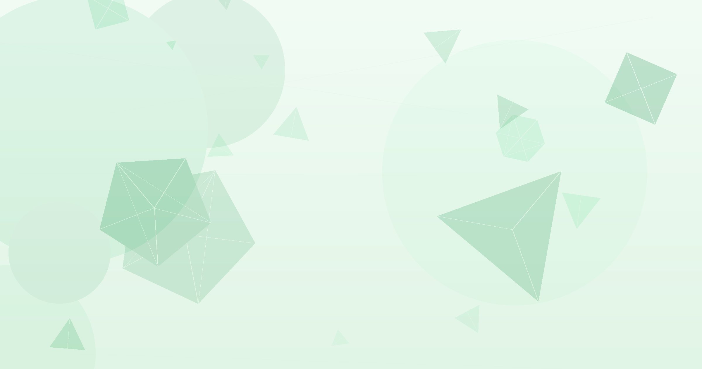

AI Scientist v2가 ICLR 2025 워크숍 피어리뷰를 통과했습니다. 평균 6.33점으로 인간 논문 55%를 앞질렀습니다.
아이디어 생성부터 논문 작성까지 ML 연구 전 과정을 AI가 자동 수행합니다.
기반 모델이 개선될수록 논문 품질이 비례해 상승하는 스케일링 법칙이 확인됐습니다.
AI 연구원을 고용하셨나요?
Sakana AI의 AI가 아이디어부터 논문 제출까지 혼자 해냈습니다.
인간 논문의 55%보다 높은 점수를 받았습니다.
"AI가 논문을 쓴다"는 말은 2024년부터 들렸습니다. 하지만 인간 연구자가 검토하는 피어리뷰를 통과한 사례는 없었습니다. 2026년 3월 26일, Sakana AI의 연구가 Nature에 정식 게재됐습니다(Lu et al., 2026). AI Scientist v2는 ICLR 2025 워크숍에서 평균 6.33점을 받아 인간 논문 55%를 앞질렀습니다. ML 연구 자동화가 이론을 넘어 검증 단계에 들어섰습니다.
R&D 비용은 기업의 핵심 지출입니다. ML 연구 한 사이클에는 연구자 수개월의 시간이 들어갑니다. AI Scientist는 아이디어 생성, 문헌 검색, 실험 설계, 실험 실행, 논문 작성을 자동 수행합니다(Lu et al., 2026). 더 중요한 것은 스케일링 법칙입니다. 기반 모델이 강해질수록 산출 논문의 품질도 비례해 오릅니다. AI 모델 개선이 곧 연구 생산성 향상으로 이어지는 구조입니다.
첫째, AI가 ML 연구 전 과정을 자동 수행합니다. 아이디어 생성, 문헌 검색, 실험 설계 및 실행, 논문 작성(LaTeX), 자체 리뷰까지 이어집니다. 병렬 에이전트 트리 탐색으로 실험을 동시에 진행합니다. 시각 모델이 그래프와 그림에 피드백을 줍니다(Lu et al., 2026). 사람의 개입 없이 논문 한 편이 완성됩니다.
둘째, v2는 최초로 인간 피어리뷰를 통과했습니다. ICLR 2025 ICBINB(I Can't Believe It's Not Better) 워크숍에 논문을 제출했습니다. 세 심사위원이 6, 7, 6점을 부여했습니다. 평균 6.33점으로 인간 저자 논문 55%보다 높은 점수입니다(Lu et al., 2026). AI가 쓴 논문이 사람이 쓴 논문보다 더 많이 합격 기준을 넘겼습니다.
| 지표 | AI Scientist v2 | 비교 기준 |
|---|---|---|
| ICLR 워크숍 평균 점수 | 6.33점 | 인간 논문 55%보다 높음 |
| 심사위원 점수 | 6 / 7 / 6 | 3인 독립 심사 |
| Automated Reviewer 정확도 | 균형 정확도 69% | 인간 수준 |
| F1-score | NeurIPS 2021 인간 합의율 초과 | 수천 건 OpenReview 데이터 기준 |
출처: Lu et al. (2026), Nature. AI Scientist v2 ICLR 2025 ICBINB 워크숍 제출 결과.
셋째, Automated Reviewer도 인간 수준에 도달했습니다. AI가 논문을 작성할 뿐 아니라 평가도 합니다. 균형 정확도 69%는 인간 심사위원과 동급입니다. NeurIPS 2021 인간 합의율 실험에서 F1-score를 초과했습니다(Lu et al., 2026). 수천 건의 실제 OpenReview 데이터로 검증했습니다.
넷째, 스케일링 법칙이 논문 품질에도 적용됩니다. 기반 모델이 개선되면 생성 논문의 품질이 비례해 오릅니다(Lu et al., 2026). 모델 개선에 투자하면 연구 생산성이 자동으로 올라가는 구조입니다. AI 모델 경쟁이 연구 자동화 경쟁과 연결됩니다.
다섯째, 연구팀은 윤리 가이드라인을 선제 적용했습니다. 합격한 논문을 발행 전 자진 철회했습니다. IRB(기관생명윤리심의위원회) 승인을 받았습니다. 모든 AI 생성 논문에 워터마크 적용을 권고했습니다(Lu et al., 2026). 워크숍 주최 측의 사전 허가를 받고 제출했습니다.
ML 연구 자동화가 피어리뷰를 통과했다는 사실을 전달합니다. "우리 연구 프로세스 중 어디를 자동화할 수 있는가"를 함께 검토합니다. AI Scientist GitHub 저장소 링크(SakanaAI/AI-Scientist-v2)를 첨부합니다. (30분, 슬랙 메시지 또는 간단한 브리핑)
문헌 검색, 실험 파라미터 튜닝, 결과 정리 중 반복되는 것을 적습니다. 이 중 AI Scientist가 이미 자동화한 단계와 겹치는 항목을 표시합니다. Claude에 "이 작업들 중 현재 LLM으로 자동화 가능한 것을 분류해줘"라고 요청합니다. (1시간, 워크플로우 분석)
연구팀이 제안한 AI 워터마크 권고는 기업에도 적용됩니다. AI가 생성한 보고서, 분석, 제안서에 출처 표기 정책이 있는지 확인합니다. 없다면 간단한 내부 가이드라인(AI 활용 여부 명시)을 초안으로 작성합니다. (2시간, 정책 초안)
현재는 계산 실험만 가능합니다. AI Scientist는 컴퓨터로 실행하는 ML 실험에 한정됩니다. 물리 실험, 임상시험, 현장 조사가 필요한 연구에는 적용할 수 없습니다(Lu et al., 2026). 적용 범위를 과대평가하지 않는 것이 중요합니다.
할루시네이션과 미숙한 아이디어 문제가 남아 있습니다. 부정확한 인용 생성, 그림 중복 같은 오류가 발생합니다(Lu et al., 2026). 아이디어 수준이 낮거나 방법론이 얕은 논문도 있습니다. 인간 검토 없이 결과를 그대로 신뢰하면 안 됩니다.
연구 윤리 기준이 아직 형성 중입니다. AI 논문의 저자 자격, 책임 귀속, 공개 요건이 학계마다 다릅니다. Nature의 편집 정책(2026년 4월 발표)과 같이 각 저널의 AI 활용 기준을 확인해야 합니다. 미리 파악하지 않으면 제출 거부 또는 철회 요청을 받을 수 있습니다.
스케일링 이점은 고품질 모델 접근을 전제로 합니다. 기반 모델이 강할수록 성능이 오른다는 것은, 최신 모델 접근 비용이 연구 품질에 직결된다는 의미입니다. 모델 접근 비용이 새로운 연구 격차로 이어질 수 있습니다.
AI가 ML 논문을 혼자 쓰고 피어리뷰를 통과했습니다. 연구 자동화는 이미 검증 단계입니다.
피어리뷰(Peer Review): 논문 제출 후 해당 분야 전문가들이 연구의 타당성과 품질을 검토하는 과정입니다. 학술 출판의 핵심 품질 관문입니다.
ICLR: 국제 학습 표현 학술대회(International Conference on Learning Representations)입니다. ML 분야 최상위 학술대회 중 하나입니다.
균형 정확도(Balanced Accuracy): 합격과 불합격 두 클래스를 각각 얼마나 잘 맞추는지 평균한 지표입니다. 데이터 불균형 상황에서 단순 정확도보다 신뢰도가 높습니다.
스케일링 법칙(Scaling Law): 모델 크기나 데이터가 커질수록 성능이 예측 가능한 비율로 향상되는 현상입니다.
에이전트 트리 탐색: AI가 여러 실험 경로를 동시에 탐색해 최적 결과를 찾는 방식입니다. 체스 AI의 탐색 전략과 유사합니다.
IRB(기관생명윤리심의위원회): 연구 참여자 보호와 연구 윤리를 심의하는 기관입니다. 대학과 연구기관이 운영합니다.
- Lu, C., Lu, C., Lange, R. T., Foerster, J., Clune, J., & Ha, D. (2026, 3월). The AI Scientist: Towards Fully Automated Open-Ended Scientific Discovery [Article]. Nature. https://www.nature.com/articles/s41586-026-10265-5
- Sakana AI. (2026, 3월). The AI Scientist: Nature Publication [Blog post]. Sakana AI. https://sakana.ai/ai-scientist-nature/